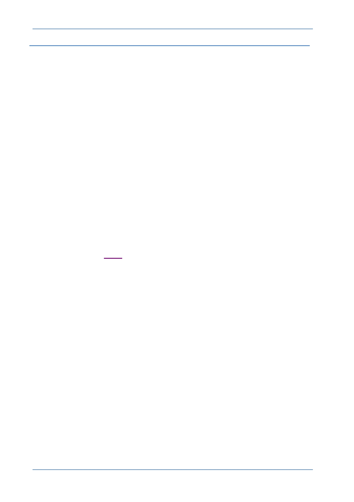

PTC Academic Program
W hat’s new in Creo Parametric
To help existing CAD users, here is a list of the key changes in Creo Parametric 2.0
Tabbed ribbon menus with 90% of the tools instantly available.
Customizable ribbon interface.
The new Command Search tool lets you type a command and see a filtered list
of tools. When you cursor over an item in the list, Creo locates and highlights the
command in the ribbon.
Learning Connector provides short on- demand “How to” videos linked to each
tool.
New Shading with Edges display type.
Starting a feature like extrude lets you select the sketch plane without seeing the
sketch dialog box. Much simpler and now the quickest (CAD program) on the
draw!
While sketching, holding down the ALT key lets you create references on-the-
fly without interrupting the sketch tool.
Construction mode in sketcher.
The new Center Rectangle tool lets you sketch a rectangle from its center.
Enhanced geometry colors to help visualization and selection.
Freestyle is a new subdivision modeler in Creo Parametric. Freestyle is similar
to Warp but much more powerful and very easy to use. Take a look at the
vacuum cleaner demo on YouTube.
Dynamic Edit - Direct access to features and parameters with real time
regeneration.
3D Dragger handles make editing and positioning really easy.
Automatic addition (protrusion) or removal (cut) of material when creating
Extrude or Revolve features.
Extrude with taper or draft applied to the side surfaces of the extruded geometry.
New, easy to use Corner Chamfer tool.
Single sweep command combines variable section and simple sweep tools.
Single helical sweep tool now offers variable section and variable pitch.
Streamlined and enhanced measurement tools.
Enhanced sheet metal tools including live flat pattern preview.
Creo Parametric will open native Solidworks, Inventor and Solid Edge models
making it easy to reuse legacy data when upgrading to Creo.
Faster assembly, real time interference detection and easier 3D sections.
© 2012 PTC
Creo Parametric 2.0 Primer
Page 9